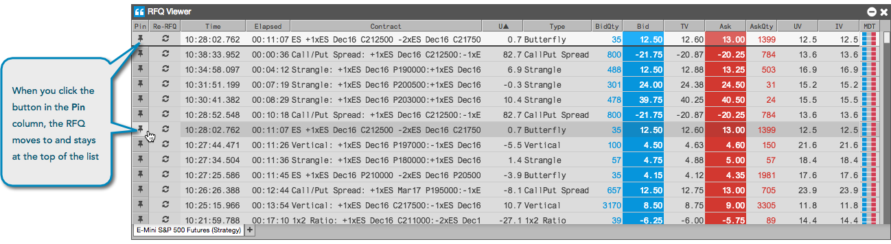

To help manage the display of RFQs that you receive, you can pin RFQ rows in the RFQ Viewer.
As a way to monitor a specific RFQ, you can pin it to the top of the list in the viewer. Click the button in the Pin column to move and pin the RFQ to the top of the list.
The RFQ for the instrument will stay at the top of the list as new RFQs are displayed in the viewer. To unpin the RFQ, simply click the button again in the Pin column.
Note: Pinning an RFQ to the top of the list does not resend it.
